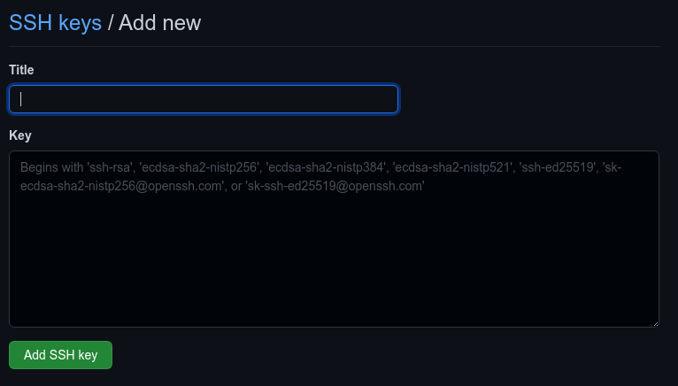

authenticating git with ssh is by generating a pair of encryption keys asymmetrically, where the key is stored on the system and the other is stored on the server.
in other words the computer will not get access rights if the key that is paired is wrong or different, so this allows a very, very secure connection than we use https.
and another advantage that we no longer use tokens when setting up the repository but just the password we set if you set it later when generating or generating ssh keys.
Preparation
first check your ~/.ssh directory if it already contains files. files in the ~/.ssh directory usually contain:
id_rsa
id_rsa.pub
if it already exists you can skip these steps and go to point copy the key to github
install the necessary packages, because I use archlinux so I typed this:
sudo pacman -S git openssh
generate ssh key
after everything is ready, generate ssh key by typing
ssh-keygen -C "< e-mail yang terhubung dengan github >"
this command generates the 2 keys needed to authenticate ssh: the rsa id and rsa id.pub files stored in the .ssh directory.
copy key to github
then copy the key ending in .pub into github.
login to your github account then go to settings page > ssh and gpg keys > new ssh keys
The next screen will be as below, enter whatever ssh key name is in the title column, for example my-ssh-key then paste the contents of the id rsa.pub file in the key column.

Click Add SSH Key
next, check if the ssh key is connected.
ssh -T git@github.com
when using ssh we no longer type
git add https: // github.com/yourname/repository.git again,
but by typing git add git@github.com:yourname/repository.git